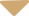

组合式沙发
想要扩大客厅的空间，沙发就是整个空
间的焦点。小户型客厅讲究的是实用，
一些现代、简约风格的沙发，尤其是一
些组合式沙发，由于占地少、功能齐全
优点成为了小户型客厅的首选。
客厅与书架
小客厅要做到简约又空间感宽阔，那么
客厅柜是很重要的。如今，书架式客厅
柜成为了首选。原因在于这样的客厅柜
不仅外形简约而且实用，对于物品的整
理能力也不容忽视。
茶几装饰
如果想让客厅看起来有更多的“内涵”
，那么茶几也是颇具改造潜力的。暗藏
抽屉的茶几，可以把漂亮的杂志还有原
先杂乱无章的小饰品放在里面，使客厅
看起来整洁不少。
上浅下深
浅色感觉轻，深色感觉重。
可以把屋顶和墙壁刷成白色、
米黄色等浅色系，墙裙加深一
些，家具颜色更深一些。这样
给人感觉既稳定又和谐。
阳光朝向
缺乏阳光的朝东、朝北应多用
明亮的浅色。日照长的朝南、
朝西应用相对冷一点的色。
多用中性色
中性色是含大比例黑或白的色
彩，如沙色、石色、浅黄色、
灰色、棕色，这些色彩能给人
宁静的感觉。不过，纯白色与
纯黑色应尽量避免。
防止色彩过多
墙面配色不得超过三种，否则
会显得很凌乱。墙面的颜色过
多，则破坏整体的美观，给人
凌乱的感觉，反而让整个空间
更加狭小。
田园风格

欧式风格
日系风格
简约风格
宜家风格
中式风格
田园风格
田园风格非常适合小户型，田园风格给
人一种休息的感觉，宁静、质朴中透出
的素雅感觉也深受年轻人的喜爱。不需
要花哨的色彩和图案，保留其原始的自
然感觉。
欧式风格
欧式风格注重整体色调，如果小户型采
用欧式风格会比较冒险，因为空间不足
会导致房间看起来非常杂乱，所以对于
欧式风格设计，色调要注意，可以使用
浅色系，这样才能更加的有空间感。
日系风格
在空间布局上日系风格体现出日式的倾
向，空间装饰多采用简洁、硬朗的直线
条，反映出现代人追求简单生活的居住
要求，迎合了日系家居追求内敛、质朴
的设计风格。
简约风格
小户型最好是以简约风格比较好，这样
装修起来整体空间感觉更不会杂乱。但
是在装修的过程中，要先确定一个原则
就是一定要以简单、明亮、通透为主。
宜家风格
宜家风格简约大方又不失创意，使用黑
白灰以及原木色系作为家装主色调。宜
家风格的家具配饰等的选择往往具有鲜
明的线条，造型简约或是充满设计感，
营造一个简约而不简单的家居空间。
中式风格
中式风格融合了庄重与优雅双重气质。
现在的中式风格更多地利用了后现代手
法，把传统的结构形式通过重新设计组
合以另一种民族特色的标志符号出现。
在线注册预约
客服电话回访
免费上门量房
免费4套设计